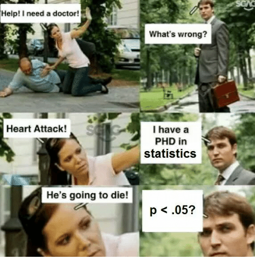
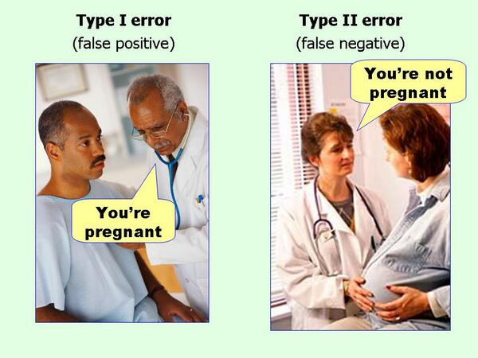

Esse conteúdo foi criado com o intuito de despertar o leitor para a importância da Estatística para a ciência e geração de conhecimento. Nossa ideia é apresentar conceitos da maneira que gostaríamos de ter sido apresentados quando alunos prestes a serem iniciados na ciência. Nossa abordagem é simplificar os conceitos o máximo possível sem perder a sua essência. E, quando necessário, aliando-os com sua trajetória histórica para compreensão do “porque as coisas são como são.” Não estamos atrás de formalismo matemático, mas sim de conseguir desenvolver uma intuição clara do que é cada conceito, quando se deve usá-lo e quais são os principais cuidados que se deve ter.
A estatística é dividida em duas partes:
- Estatística Descritiva: Sumariza e quantifica as características de uma amostra de dados observados. Métricas comuns são: média, mediana, moda, desvio padrão, variância, correlação, percentis.
- Estatística Inferencial: Permite gerar inferências (afirmações) a partir de um conjunto de uma amostra de dados observados sobre real processo de geração de dados (população). Há diversas maneiras de se gerar tais inferências, mas os principais são os testes de hipóteses clássicos que usam uma hipótese nula \(H_0\) pré-especificada. A figura 1 mostra a relação entre dados observados e o processo de geração de dados sob a ótica da probabilidade e da estatística.
Figure 1: Estatística Inferencial
Estatística Inferencial
O nosso intuito nesse conjunto de tutoriais é focar na Estatística inferencial, porque, ao contrário da Estatística descritiva, a Estatística inferencial é raramente compreendida ao ponto do usuário e consumidor estarem aptos à realizar e consumir análises, respectivamente.
A Estatística inferencial têm suas origens no final do século XIX, especialmente no trabalho de Karl Pearson1 e se baseia em um conjunto de técnicas e procedimentos para testar hipóteses sobre uma amostra generalizando para uma população-alvo.
Figure 2: Karl Pearson. Figura de https://www.wikipedia.org
A chave para compreesão da Estatística inferencial se baseia em entender os testes de hipóteses, também chamado de testes estatísticos. Todos testes estatísticos2 segue o mesmo padrão universal (Downey, 2016):
- Calculamos uma estatística da amostra. Aqui estatística (em letras minúsculas) significa uma medida dos dados. Para fins de exemplo vamos chamar essa medida de \(\delta\) (letra gregra delta). Essa é a medida que mais nos importamos: uma diferença de média, mediana ou proporções, entre outras…
- Contrastamos essa estatística observada com uma estatística computada se o efeito fosse nulo. Em outras palavras, o que observamos é comparado com o resultado que esperaríamos caso estívessemos vivendo em um mundo no qual essa medida (diferença de média, mediana ou proporções, …) fosse nula (zero). Geralmente esse universo paralelo no qual o efeito observado é zero ou nulo é chamado de Hipótese Nula e é representada com o seguinte símbolo \(H_0\). A estatística \(\delta\) no mundo da \(H_0\) não é calculada, mas sim dada por um valor que fora matematicamente provado como o valor de \(\delta\) no mundo da \(H_0\). Vamos chamar esse valor de \(\delta_0\)
- Calculamos a probabidalide de obtermos algo como \(\delta\) no mundo da \(H_0\): chamamos isso de \(p\)-valor. O \(p\)-valor é a probabilidade de observarmos um \(\delta\) no mínimo tão grande quanto o observado num mundo no qual não há o efeito \(\delta\). Ou seja \(\delta = 0\), e consequentemente \(\delta = \delta_0\). Como sabemos do valor \(\delta_0\) de antemão, basta compararmos o nosso \(\delta\) com \(\delta_0\) para gerar o \(p\)-valor. Por isso que muitos livros de Estatística possuem um vasto arsenal de tabelas. O leitor pode facilmente ver o seu \(\delta\) e com alguns dados sobre a amostra, em especial o número da amostra, obter o \(\delta_0\) e \(p\)-valor respectivos.
- Decidimos se \(\delta\) possui significância estatística. Escolhemos um limiar de rejeição da \(H_0\), muitas vezes chamado de \(\alpha\) (letra gregra alpha). Esse limiar será o nosso critério de decisão se há evidências suficientes para rejeitarmos o mundo da \(H_0\).
Este paradigma descrito nos quatro passos acima é chamado de Null Hypothesis Significance Testing – NHST (tradução: teste de significância de hipótese nula) e é o que predomina em grande parte da ciência do passado e atual.
Uma segunda chave para a compreensão da Estatística inferencial possui razões históricas. As técnicas de Estatística inferencial clássicas são em grande parte um mecanismo técnico de aproximações numéricas baseadas na distribuição Normal e suas muitas engrenagens subsidiárias. Essa máquina já foi necessária, porque a alternativa conceitualmente mais simples baseada em permutações estava computacionalmente além de nosso alcance3. Antes dos computadores, os estatísticos não tinham escolha (Cobb, 2007).
\(p\)-valor e Hipótese Nula \(H_0\)
\(p\)-valores são de difícil entendimento, \(p < 0.05\).

Sem dúvida, esta parte da Estatística inferencial é a mais complicada e menos intuitiva. Parafraseando Andrew Gelman, estatístico da Columbia University, “Para definir \(p\)-valores, escolha uma das duas características: intuitiva ou precisa. Ou sua definição é intuitiva mas imprecisa, ou sua definição é precisa mas não intuitiva.” A grande maioria dos pesquisadores4 possui uma definição incorreta do que é um \(p\)-valor (Cumming, 2009). E quando vemos evidências do campo da medicina, que talvez seja o campo com maior quantidade de recursos disponíveis para pesquisa e avanço do conhecimento, também encontramos muitos problemas no uso dos \(p\)-valores (Ioannidis, 2019). Antes de entrarmos nas definições de \(p\)-valores, vale a pena tranquilizá-los: \(p\)-valores são uma coisa complicada e se você não entender na primeira vez que ler as definições abaixo, não se preocupe, você não estará em má companhia; respire fundo e tente ler mais uma vez.
Primeiramente a definição estatística:
\(p\)-valor é a probabilidade de obter resultados no mínimo tão extremos quanto os que foram observados, dado que a hipótese nula \(H_0\) é verdadeira.
Se você escrever essa definição em qualquer prova, livro ou artigo científico, você estará 100% preciso e correto na definição do que é um \(p\)-valor. Agora, a compreensão dessa definição é algo complicado. Para isso, vamos quebrar essa definição em algumas partes para melhor compreensão:
- “probabilidade de obter resultados…”: vejam que \(p\)-valores são uma característica dos seus dados e não da sua teoria ou hipótese.
- “…no mínimo tão extremos quanto os que foram observados…”: “no minimo tão” implica em definir um limiar para a caracterização de algum achado relevante, que é comumente chamado de \(\alpha\). Geralmente estipulamos alpha em 5% (\(\alpha = 0.05\)) e qualquer coisa mais extrema que alpha (ou seja menor que 5%) caracterizamos como significante5.
- “..dado que a hipótese nula é verdadeira…”: Todo teste estatístico que possui um \(p\)-valor possui uma Hipótese Nula (geralmente escrita como \(H_0\)). Hipótese nula, sempre tem a ver com algum efeito nulo. Por exemplo, a hipótese nula do teste Shapiro-Wilk e Komolgorov-Smirnov é “os dados são distribuídos conforme uma distribuição Normal” e a do teste de Levene é “as variâncias dos dados são iguais.” Sempre que ver um \(p\)-valor, se pergunte: “Qual a hipótese nula que este teste presupõe correta?6”
Para entender o \(p\)-valor qualquer teste estatístico primeiro descubra qual é a hipótese nula por trás daquele teste. A definição do \(p\)-valor não mudará. Em todo teste ela é sempre a mesma. O que muda com o teste é a hipótese nula. Cada teste possui sua \(H_0\).

\(p\)-valor é a probabilidade dos dados que você obteve dado que a hipótese nula é verdadeira. Para os que gostam do formalismo matemático: \(p = P(D|H_0)\). Em português, essa expressão significa “a probabilidade de \(D\) condicionado à \(H_0\).” Antes de avançarmos para alguns exemplos e tentativas de formalizar uma intuição sobre os \(p\)-valores, é importante ressaltar que \(p\)-valores dizem algo à respeito dos dados e não de hipóteses. Para o \(p\)-valor, a hipótese nula é verdadeira, e estamos apenas avaliando se os dados se conformam à essa hipótese nula ou não. Se vocês saírem desse tutorial munidos com essa intuição, o mundo será agraciado com pesquisadores mais preparados para qualificar e interpretar evidências (\(p < 0.05\)).
Exemplo intuitivo:
Imagine que você tem uma moeda que suspeita ser enviesada para uma probabilidade maior de dar cara. (Sua hipótese nula é então que a moeda é justa.) Você joga a moeda 100 vezes e obtém mais cara do que coroa. O \(p\)-valor não dirá se a moeda é justa, mas dirá a probabilidade de você obter pelo menos tantas caras quanto se a moeda fosse justa. É isso - nada mais.
Algumas questões históricas
Não tem como entendermos \(p\)-valores se não compreendermos as suas origens e trajetória histórica. A primeira menção do termo foi feita pelo estatístico Ronald Fisher7 em 1925 (Fisher, 1925) que define o \(p\)-valor como um “índice que mede a força da evidência contra a hipótese nula.” Para quantificar a força da evidência contra a hipótese nula, Fisher defendeu “\(p<0.05\) (5% de significância) como um nível padrão para concluir que há evidência contra a hipótese testada, embora não como uma regra absoluta.” Fisher não parou por aí mas classificou a força da evidência contra a hipótese nula. Ele propôs “se \(p\) está entre 0.1 e 0.9, certamente não há razão para suspeitar da hipótese testada. Se estiver abaixo de 0.02, é fortemente indicado que a hipótese falha em explicar o conjunto dos fatos. Não seremos frequentemente perdidos se traçarmos uma linha convencional de 0.05” Desde que Fisher fez esta declaração há quase 100 anos, o limiar de 0.05 foi usado por pesquisadores e cientistas em todo o mundo e tornou-se ritualístico usar 0.05 como limiar como se outros limiares não pudessem ser usados.

Figure 3: Ronald Fisher. Figura de https://www.wikipedia.org
Após isso, o limiar de 0.05 agora instaurado como inquestionável influenciou fortemente a estatística e a ciência. Mas não há nenhuma razão contra a adoção de outros limiares (\(\alpha\)) como 0.1 ou 0.01. Se bem argumentados, a escolha de limiares diferentes de 0.05 pode ser bem-vista por editores, revisores e orientadores. Como o \(p\)-valor é uma probabilidade, ele não é um quantidade contínua. Não há razão para diferenciarmos um \(p\) de 0.049 contra um \(p\) de 0.051. Robert Rosenthal, um psicólogo já dizia “Deus ama \(p\) de 0.06 tanto quanto um \(p\) de 0.05” (Rosnow & Rosenthal, 1989).

O que o \(p\)-valor não é
Com a definição e intuição do que é um \(p\)-valor bem ancoradas, podemos avançar para o que o \(p\)-valor não é!

- \(p\)-valor não é a probabilidade da Hipótese nula - Famosa confusão entre \(P(D|H_0)\) e \(P(H_0|D)\). \(p\)-valor não é a probabilidade da hipótese nula, mas sim a probabilidade dos dados que você obteve. Por exemplo: a probabilidade de você tossir dado que você está com COVID é diferente da probabilidade de você estar com COVID dado que você tossiu: \(P(\text{tosse} | \text{COVID}) \neq P(\text{COVID} | \text{tosse})\). Acredito que a primeira, \(P(\text{tosse} | \text{COVID})\) é bem alta, enquanto a segunda, \(P(\text{COVID} | \text{tosse})\) deve ser bem baixa (afinal tossimos a todo momento).
\(p\)-valor não é a probabilidade dos dados serem produzidos pelo acaso - Não! Ninguém falou nada de acaso. Mais uma vez: \(p\)-valor é probabilidade de obter resultados no mínimo tão extremos quanto os que foram observados, dado que a hipótese nula é verdadeira.
\(p\)-valor mensura o tamanho do efeito de um teste estatístico - Também não… \(p\)-valor não diz nada sobre o tamanho do efeito. Apenas sobre se o quanto os dados observados divergem do esperado sob a hipótese nula. É claro que efeitos grandes são mais prováveis de serem estatisticamente significantes que efeitos pequenos. Mas isto não é via de regra e nunca julguem um achado pelo seu \(p\)-valor, mas sim pelo seu tamanho de efeito. Além disso, \(p\)-valores podem ser “hackeados” de diversas maneiras (Head, Holman, Lanfear, Kahn, & Jennions, 2015) e muitas vezes seu valor é uma consequência direta do tamanho da amostra. Mais sobre isso no conteúdo auxiliar sobre tamanho de amostra.
Intervalos de Confiança
Intervalos de confiança foram criados como uma solução para os problemas de má-interpretação dos \(p\)-valores e sua aplicação se destina ao tamanho do efeito. Se você achou \(p\)-valor confuso, se prepare! Intervalos de confiança são ainda mais confusos e muitos pesquisadores e cientistas também não possuem a compreensão correta (Hoekstra, Morey, Rouder, & Wagenmakers, 2014)8…Vamos para a definição estatística do idealizador dos intervalos de confiança, Jerzy Neyman, em 1937 (Neyman, 1937):
“Um intervalo de confiança de X% para um parâmetro é um intervalo (a, b) gerado por um procedimento que em amostragem repetida tem uma probabilidade de X% de conter o valor verdadeiro do parâmetro, para todos os valores possíveis do parâmetro.”9 (Neyman, 1937)
Mais uma vez vamos quebrar essa definição em em algumas partes para melhor compreensão:
- “… intervalo (a,b) …”: intervalo de confiança sempre serão expressados como um intervalo \(a\) - \(b\), onde \(a\) é menor que \(b\) (\(a < b\)).
- “… gerado por um procedimento que em amostragem repetida…”: aqui estamos falando de população. E o que você geralmente tem nas suas mãos quando está fazendo uma análise estatística é uma amostra. Uma população é um conjunto de pessoas, itens ou eventos sobre os quais você quer fazer inferências. Uma amostra é um é um subconjunto de pessoas, itens ou eventos de uma população maior que você coleta e analisa para fazer inferências. Geralmente o tamanho da amostra é bem menor que o tamanho da população. Então, intervalos de confiança expressam a frequência de longo-prazo que vocês esperaria obter de um tamanho de efeito caso replicasse o teste estatístico para diversas amostras da MESMA população.
- “… tem uma probabilidade de X% de conter o valor verdadeiro do parâmetro, para todos os valores possíveis do parâmetro.”: os intervalos de confiança sempre serão expressados acompanhados de uma probabilidade (algo entre 0.001% e 99.999%) que quantifica a certeza de encontrar o intervalo em uma replicações do teste estatístico para diversas amostras da MESMA população.
Por exemplo: digamos que você executou uma análise estatística para comparar eficácia de uma política pública em dois grupos e você obteve a diferença entre a média desses grupos. Você pode expressar essa diferença como um intervalo de confiança. Geralmente escolhemos a confiança de 95% (sim, está relacionado com o 0.05 do \(p\)-valor). Você então escreve no seu artigo que a “diferença entre grupos observada é de 10.5 - 23.5 (95% IC).” Isso quer dizer que 95 estudos de 100, que usem o mesmo tamanho de amostra e população-alvo, aplicando o mesmo teste estatístico, esperarão encontrar um resultado de diferenças de média entre grupos entre 10.5 e 23.5. Aqui as unidades são arbitrárias, mas para continuar o exemplo vamos supor que sejam espectativa de vida.
Falácias
Em um artigo bem controverso, Morey, Hoekstra, Rouder, Lee, & Wagenmakers (2016) mostram as três grandes falácias (qualquer enunciado ou raciocínio falso que entretanto simula a veracidade) dos intervalos de confiança (a tradução é livre e feita por nós):
A falácia fundamental dos intervalos de confiança: Um intervalo de confiança de X% para um parâmetro é um intervalo (a, b) gerado por um procedimento que na amostragem repetida tem uma probabilidade de X% de conter o valor verdadeiro do parâmetro, para todos os valores possíveis do parâmetro. probabilidade de que um intervalo aleatório contém o valor verdadeiro é X%, então a plausibilidade ou probabilidade de que um determinado intervalo observado contém o valor verdadeiro também é X%; ou, alternativamente, podemos ter X% de confiança de que o intervalo observado contém o valor real10.
A falácia da precisão: A largura de um intervalo de confiança indica a precisão de nosso conhecimento sobre o parâmetro. Intervalos de confiança estreitos correspondem a conhecimentos precisos, enquanto erros de confiança amplos correspondem a conhecimentos imprecisos11.
A falácia da probabilidade: Um intervalo de confiança contém os valores prováveis para o parâmetro. Os valores dentro do intervalo de confiança são mais prováveis do que os externos. Essa falácia existe em várias variedades, às vezes envolvendo plausibilidade, credibilidade ou razoabilidade de crenças sobre o parâmetro12.
Note que todas essas três falácias estão erradas e são uma compreensão errônea ou incompleta de intervalos de confiança.
Relação entre intervalos de confiança e \(p\)-valores
Intervalos de confiança estão profundamente relacionados com \(p\)-valores. Primeiro, para que uma estimativa tenha um \(p\)-valor menor que 0.05, seu intervalo de confiança 95% não pode capturar o zero. Ou seja, o intervalo não pode compreender o efeito nulo (Hipótese Nula - \(H_0\)). Isso segue para outros valores de \(p\) correspondentes com outros níveis de confiança dos intervalos. Por exemplo, para uma estimativa com \(p\)-valor menor que 0.01, seu intervalo de confiança 99% não pode capturar o 0. Além disso, intervalos de confiança (assim como \(p\)-valores) estão intrinsicamente conectados com o tamanho da amostra. Quanto maior o tamanho de amostra, mais estreito será o intervalo de confiança. A intuição por trás disso é que conforme a sua amostra aumenta, também aumentarão a sua confiança e precisão em inferências sobre a população-alvo. Por fim, intervalos de confiança (assim como \(p\)-valores) não falam nada sobre a sua teoria ou hipótese, mas sobre a relação dos seus dados (amostra) com a população-alvo. Eles não são a probabilidade do parâmetro estimado (\(P(\text{parâmetro} | D)\), no nosso exemplo diferença entre médias de grupos), mas sim a probabilidade de amostras com o mesmo parâmetro estimado (\(P(D | \text{parâmetro})\)).
Uma boa maneira de resumir \(p\)-valores e intervalos de confiança é a seguinte:
Considere \(p\)-valores algo que mensura a possibilidade de existir um efeito ou não e intervalos de confiança quantificam o tamanho desse efeito.
Significância Estatística vs Significância Prática
Para encerrar esse tour de \(p\)-valores e intervalos de confiança, temos que nos atentar que significância estatística não é a mesma coisa que significância prática. Significância estatística é se algum achado de um teste/modelo estatístico diverge o suficiente da hipótese nula e, sendo que hipótese nula sempre são sobre efeitos ou diferenças nulas, podemos afirmar que significância estatística quer dizer um achado é diferente de um efeito nulo. Diversos testes da Estatística inferencial clássica quando submetidos à amostras grandes13 vão detectar uma diferença significante, mesmo que praticamente insignificante. Com uma amostra suficientemente grande nós conseguimos gerar \(p\)-valores significantes para diferenças minúsculas, como por exemplo uma diferença de 0.01cm altura entre dois grupos de uma amostra.
Por isso que defendemos que nunca se interprete análises estatísticas somente com \(p\)-valores, mas sempre em conjunto com os intervalos de confiança que quantificam o tamanho do efeito. Nunca gere argumentos sobre evidências somente a partir de significância estatística, sempre inclua tamanho do efeito.
Erro Tipo I e Erro Tipo II
Na Estatística inferencial temos dois erros possíveis quando estamos realizando um teste estatístico contra uma hipótese nula.
- Erro tipo I, também chamado de “falso positivo”, é a chance de rejeitarmos a hipótese nula quando ela é verdadeira. Esse erro é o alpha \(\alpha\) que é usado como limiar de significância do \(p\)-valor.
- Erro tipo II, também chamado de “falso negativo”, é a chance de não rejeitarmos a hipótese nula quando ela é falsa. Esse erro é identificado como a letra grega beta \(\beta\). Além disso, o poder de um teste estatístico é mensurado como \(1 - \beta\). O poder de um teste estatístico aumenta proporcionalmente ao tamanho amostral. Quanto maior a amostra, maior o poder do teste.

Por questões históricas, o erro tipo I14 foi considerado mais importante de ser controlado do que o erro tipo II. Portanto, quase todos os testes de hipótese nula focam no controle dos “falsos positivos” enquanto o controle dos “falsos negativos” são colocados em segundo plano. No mundo ideal, tanto \(\alpha\) quando \(\beta\) devem ser reduzidos o máximo possível. Isto requer um tamanho amostral frequentemente maior do que os recursos disponíveis para o pesquisador, portanto é comum pesquisadores usarem um \(\alpha\) de 5% e um \(\beta\) de 20% (poder de 80%).
Tamanho da Amostra
A maioria dos testes estatísticos que computam um \(p\)-valor são extremamente sensíveis a tamanho da amostra. A hipótese nula sempre representa a ausência de qualquer efeito e nunca a diferença observada na amostra é igual a zero. Sempre há algum digito, menor que seja, que faz com que a diferença seja diferente de zero, ex: 0.00001. Quanto maior o tamanho da amostra maior a probabilidade de obtermos um \(p\)-valor significante, pois ele indica que o efeito é diferente de zero, mesmo que essa diferença seja insignificante do ponto de vista prático. Em certos contextos, defendemos que o \(p\)-valor é uma aproximação (proxy) de tamanho da amostra.

E aonde entra a Estatística Bayesiana?
A Estatística Frequentista15 se baseia em realizarmos testes de hipóteses sempre comparando os dados disponíveis com um cenário hipótetico de efeito nulo – \(H_0\):
\[P(D | H_0)\]
O resultado dessa probabilidade é o \(p\)-valor: a probabilidade dos dados obtidos condicionado à hipótese nula ser verdadeira. E se quisermos a probabilidade da hipótese nula16 e não dos dados obtidos?
Para isso temos que “inverter” a probabilidade. Estamos interessados em:
\[P(H_0 | D)\] Isso somente pode ser feito com o teorema de Bayes. Generalizando de \(H_0\) para qualquer \(H\), o teorema de Bayes nos permite “inverter” a probabilidade condicional:
\[P(H | D)=\frac{P(H) \cdot P(D | H)}{P(D)}\] Aqui temos as seguintes probabilidades (note que podemos trocar \(H\) aqui para qualquer parâmetro \(\theta\)):
- \(P(H|D)\) – probabilidade posterior de \(H\) depois de observamos os dados \(D\).
- \(P(H)\) – probabilidade prévia de \(H\) antes de observarmos os dados \(D\).
- \(P(D|H)\) – probabilidade dos dados obtidos sob a hipótese \(H\), também chamada de verossimilhança (do inglês likelihood).
- \(P(D)\) – chamada de evidência ou verossimilhança marginal (do inglês marginal likelihood), é a probabilidade geral dos dados de acordo com o modelo, determinada pela média de todos os valores de hipóteses ou paramêtros possíveis ponderados pela força da crença nesses valores de hipóteses ou parâmetros. Para hipóteses valores discretos de parâmetros: \(P(D) = \sum_\theta P(D|H_0) P(H_0)\). Já para valores contínuos de parâmetros: \(P(D) = \int_\theta P(D|\theta) P(\theta) d \theta\). Em outras palavras, tome a probabilidade média \(P(D|\theta)\) em todos os valores de \(\theta\), ponderada pela probabilidade anterior de \(\theta\) - \(P(\theta)\). A única função de \(P(D)\) é garantir que a probabilidade posterior \(P(H|D)\) seja válida (algo entre 0 e 1).
Portanto, a Estatística Bayesiana é qualquer técnica inferencial caracterizada pelo uso de informação prévia embutida como probabilidade prévia \(P(H)\). Nós não usamos \(p\)-valores nem intervalo de confiança, pois o conceito de hipótese nula é inexistente. Você pode especificar qualquer hipótese que queria, não necessariamente uma hipótese nula. Aqui temos o conceitos de probabilidade posterior de uma hipótese ou parâmetro ao invés de \(p\)-valores e também o conceito de intervalos de credibilidade que, ao invés de intervalos de confiança, nos dão a probabilidade de um parâmetro estar entre um intervalo de valores (muito mais intuitivo e simples de usar que um intervalo de confiança).
Comentários Finais
Sim, \(p\)-valores, intervalos de confiança, hipóteses nulas são conceitos complexos e muitos pesquisadores e cientistas não possuem a compreensão mínima necessária para a prática de Estatística inferencial. Acreditamos que a ciência (e a sociedade como um todo) se beneficiará de um maior número de cidadãos e pesquisadores que consigam avaliar, quantificar e qualificar evidências científicas. O paradigma da evidência científica atual (e, acreditamos que perdurará assim por bastante tempo) é o NHST e, apesar de termos algumas alternativas – como a Estatística Bayesiana – NHST irá predominar em boa parte da ciência pelas próximas décadas. Por isso, caro leitor, saiba que com “grandes poderes, vêm grandes responsabilidades.” Não deixe alguém torturar dados em práticas anti-éticas de \(p\)-hacking ou fundamentarem seus argumentos em compreensões incorretas de \(p\)-valor e \(H_0\).

Ambiente
R version 4.0.3 (2020-10-10)
Platform: x86_64-pc-linux-gnu (64-bit)
Running under: Ubuntu 20.10
Matrix products: default
BLAS: /usr/lib/x86_64-linux-gnu/blas/libblas.so.3.9.0
LAPACK: /usr/lib/x86_64-linux-gnu/lapack/liblapack.so.3.9.0
locale:
[1] LC_CTYPE=en_US.UTF-8 LC_NUMERIC=C
[3] LC_TIME=en_US.UTF-8 LC_COLLATE=en_US.UTF-8
[5] LC_MONETARY=en_US.UTF-8 LC_MESSAGES=en_US.UTF-8
[7] LC_PAPER=en_US.UTF-8 LC_NAME=C
[9] LC_ADDRESS=C LC_TELEPHONE=C
[11] LC_MEASUREMENT=en_US.UTF-8 LC_IDENTIFICATION=C
attached base packages:
[1] stats graphics grDevices utils datasets methods
[7] base
other attached packages:
[1] DiagrammeR_1.0.6.1 sjPlot_2.8.7 gtsummary_1.3.6
[4] lm.beta_1.5-1 DescTools_0.99.40 brms_2.14.4
[7] dplyr_1.0.4 patchwork_1.1.1 cowplot_1.1.1
[10] rstan_2.21.2 StanHeaders_2.21.0-7 latex2exp_0.4.0
[13] MASS_7.3-53 mnormt_2.0.2 ggforce_0.3.2
[16] gganimate_1.0.7 plotly_4.9.3 ggplot2_3.3.3
[19] carData_3.0-4 gapminder_0.3.0 skimr_2.1.2
[22] rstanarm_2.21.1 Rcpp_1.0.6 readxl_1.3.1
loaded via a namespace (and not attached):
[1] utf8_1.1.4 tidyselect_1.1.0 lme4_1.1-26
[4] htmlwidgets_1.5.3 grid_4.0.3 munsell_0.5.0
[7] effectsize_0.4.3 codetools_0.2-18 distill_1.2
[10] statmod_1.4.35 DT_0.17 gifski_0.8.6
[13] miniUI_0.1.1.1 withr_2.4.1 Brobdingnag_1.2-6
[16] colorspace_2.0-0 highr_0.8 knitr_1.31
[19] rstudioapi_0.13 stats4_4.0.3 bayesplot_1.8.0
[22] labeling_0.4.2 emmeans_1.5.4 repr_1.1.3
[25] polyclip_1.10-0 farver_2.0.3 bridgesampling_1.0-0
[28] rprojroot_2.0.2 coda_0.19-4 vctrs_0.3.6
[31] generics_0.1.0 xfun_0.20 R6_2.5.0
[34] markdown_1.1 isoband_0.2.3 gamm4_0.2-6
[37] projpred_2.0.2 assertthat_0.2.1 promises_1.1.1
[40] scales_1.1.1 rootSolve_1.8.2.1 gtable_0.3.0
[43] downlit_0.2.1 processx_3.4.5 lmom_2.8
[46] rlang_0.4.10 splines_4.0.3 lazyeval_0.2.2
[49] checkmate_2.0.0 broom_0.7.4 inline_0.3.17
[52] modelr_0.1.8 yaml_2.2.1 reshape2_1.4.4
[55] abind_1.4-5 threejs_0.3.3 crosstalk_1.1.1
[58] backports_1.2.1 httpuv_1.5.5 rsconnect_0.8.16
[61] tools_4.0.3 usethis_2.0.0 bookdown_0.21
[64] ellipsis_0.3.1 RColorBrewer_1.1-2 ggridges_0.5.3
[67] plyr_1.8.6 visNetwork_2.0.9 base64enc_0.1-3
[70] progress_1.2.2 purrr_0.3.4 ps_1.5.0
[73] prettyunits_1.1.1 zoo_1.8-8 fs_1.5.0
[76] here_1.0.1 magrittr_2.0.1 data.table_1.13.6
[79] magick_2.6.0 colourpicker_1.1.0 tmvnsim_1.0-2
[82] mvtnorm_1.1-1 sjmisc_2.8.6 matrixStats_0.58.0
[85] hms_1.0.0 shinyjs_2.0.0 mime_0.9
[88] evaluate_0.14 xtable_1.8-4 shinystan_2.5.0
[91] sjstats_0.18.1 jpeg_0.1-8.1 ggeffects_1.0.1
[94] gridExtra_2.3 rstantools_2.1.1 compiler_4.0.3
[97] tibble_3.0.6 gt_0.2.2 V8_3.4.0
[100] crayon_1.4.0 minqa_1.2.4 htmltools_0.5.1.1
[103] mgcv_1.8-33 later_1.1.0.1 tidyr_1.1.2
[106] expm_0.999-6 Exact_2.1 RcppParallel_5.0.2
[109] lubridate_1.7.9.2 DBI_1.1.1 sjlabelled_1.1.7
[112] tweenr_1.0.1 broom.helpers_1.1.0 boot_1.3-25
[115] Matrix_1.3-2 cli_2.3.0 insight_0.12.0
[118] parallel_4.0.3 igraph_1.2.6 forcats_0.5.1
[121] pkgconfig_2.0.3 xml2_1.3.2 dygraphs_1.1.1.6
[124] estimability_1.3 snakecase_0.11.0 stringr_1.4.0
[127] callr_3.5.1 digest_0.6.27 parameters_0.11.0
[130] rmarkdown_2.6 cellranger_1.1.0 gld_2.6.2
[133] curl_4.3 commonmark_1.7 shiny_1.6.0
[136] gtools_3.8.2 nloptr_1.2.2.2 lifecycle_0.2.0
[139] nlme_3.1-151 jsonlite_1.7.2 viridisLite_0.3.0
[142] fansi_0.4.2 pillar_1.4.7 lattice_0.20-41
[145] loo_2.4.1 fastmap_1.1.0 httr_1.4.2
[148] pkgbuild_1.2.0 survival_3.2-7 glue_1.4.2
[151] xts_0.12.1 bayestestR_0.8.2 png_0.1-7
[154] shinythemes_1.2.0 sass_0.3.1 performance_0.7.0
[157] class_7.3-18 stringi_1.5.3 e1071_1.7-4 Matemático inglês que viveu entre 1857-1936. Considerado o fundador do campo da Estatística.↩︎
em especial as técnicas clássicas/frequentistas de Estatística inferencial.↩︎
Teoricamente não precisamos da hipótese nula se, no passo 2, simulássemos e permutássemos valores da amostra para calcular um \(\delta_0\) (é provado matematicamente que se gerarmos amostras e permutações simuladas o suficiente, conseguiremos ter um \(\delta_0\) no mínimo tão verídico que a abordagem clássica) ao invés de nos embasarmos em uma aproximação numérica pré-estabelecida de \(\delta_0\). É claro que todas essas permutações e simulações são computacionalmente intensas.↩︎
Inclusive muitos renomados e citados em abundância em suas áreas.↩︎
Cuidado com essa palavra. Ela é precisa e somente deve ser usada em contextos estatísticos. Significância estatística quer dizer que os dados observados são mais extremos que um alpha prédefinido de que a hipótese nula é verdadeira.↩︎
Esse conselho é extremamente útil. Por diversas vezes temos alunos que nos procuram com uma pergunta mais ou menos assim: “Professor, o que é o teste de Sobrenome que nunca ouvi falar na minha vida hífen outro sobrenome ainda mais estranho?” Graças a Wikipedia e Google, nós simplesmente vamos atrás da \(H_0\) desse teste (busca Google: “sobrenome1-sobrenome2 null hypothesis”) e com isso conseguimos responder ao aluno.↩︎
A controvérsia da personalidade e vida de Ronald Fisher merece uma nota de rodapé. Suas contribuições, sem dúvida, foram cruciais para o avanço da ciência e da estatística. Seu intelecto era brilhante e seu talento já floresceu jovem: antes de completar 33 anos de idade ele tinha proposto o método de estimação por máxima verossimilhança (maximum likelihood estimation) (Stigler & others, 2007) e também criou o conceito de graus de liberdade (degrees of freedom) ao propor uma correção no teste de chi-quadrado de Pearson (Baird, 1983). Também inventou a Análise de Variância (ANOVA) e foi o primeiro a propor randomização como uma maneira de realizar experimentos, sendo considerado o “pai” dos ensaios clínicos randomizados. Nem tudo é florido na vida de Fisher, ele foi um eugenista e possuía uma visão muito forte sobre etnia e raça preconizando a superioridade de certas etnias. Além disso, era extremamente invariante, perseguindo, prejudicando e debochando qualquer crítico à suas teorias e publicações. O que vemos hoje no monopólio do paradigma Neyman-Pearson (Neyman & Pearson, 1933) com \(p\)-valores e hipóteses nulas é resultado desse esforço Fisheriano em calar os críticos e deixar apenas sua voz ecoar.↩︎
inclusive muitos professores de estatística, veja a referência↩︎
Original em ingles: “An X% confidence interval for a parameter is an interval (a, b) generated by a procedure that in repeated sampling has an X% probability of containing the true value of the parameter, for all possible values of the parameter.”↩︎
Original em inglês: If the probability that a random interval contains the true value is X%, then the plausibility or probability that a particular observed interval contains the true value is also X%;or, alternatively, we can have X% confidence that the observed interval contains the true value.↩︎
Original em inglês: The width of a confidence interval indicates the precision ofour knowledge about the parameter. Narrow confidence intervals correspond to precise knowledge, while wide confidence errors correspond to imprecise knowledge.↩︎
Original em inglês: A confidence interval contains the likely values for the parameter. Values inside the confidence interval are more likely than those outside. This fallacy exists in several varieties, sometimes involving plausibility, credibility, or reasonableness of beliefs about the parameter.↩︎
O que é muito comum em 2020s com o advento de Big Data e facilidade de obtenção de dados.↩︎
Jerzy Newman, fundador do paradigma NHST, e criador dos erros tipo I e tipo II defendia a ideia de que é melhor absolver um culpado (erro tipo II) do que culpar um inocente (erro tipo I).↩︎
também chamada de Estatística Clássica↩︎
ou de maneira geral qualquer hipótese ou paramêtro estimado↩︎